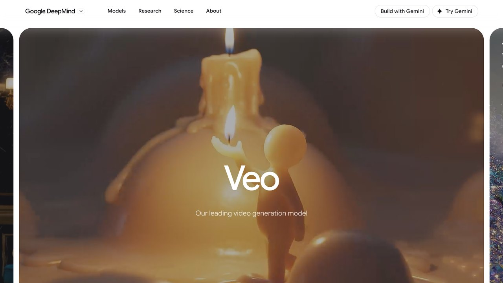
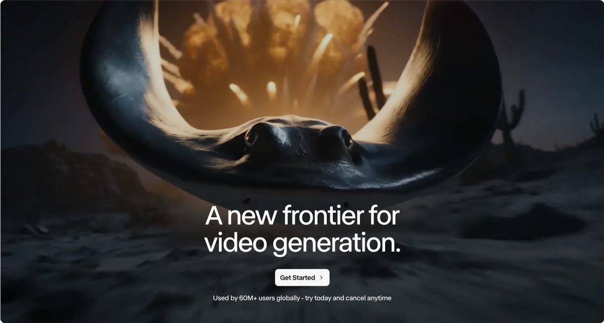
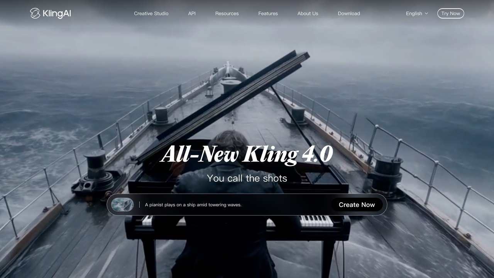

Herramientas de vídeo con IA: qué puedes generar y editar hoy
Veo, Runway y Kling comparados sin adjetivos de marketing: cuánto duran los clips que puedes generar de verdad, dónde se rompe la coherencia entre escenas y qué flujo de trabajo real usan los equipos que ya lo integran en su producción.
Generar vídeo con IA en 2026 ya no es la curiosidad de clips de cinco segundos con objetos que se deforman entre fotograma y fotograma. Los modelos de referencia —Veo de Google, la plataforma de Runway y Kling, de la china Kuaishou— producen clips con audio sincronizado, cámara estable y coherencia de personaje razonable durante varios segundos seguidos. La cuarta pata de esa mesa, Sora de OpenAI, ya no existe: es la primera lección de esta guía y la explicamos abajo. Pero "razonable durante varios segundos" no es lo mismo que "listo para sustituir a un rodaje real", y esa distancia entre lo que promete el vídeo de demostración y lo que obtienes en tu tercer intento es exactamente lo que esta guía intenta medir con honestidad.
Esta guía complementa la de generación de imágenes con IA: muchas de las técnicas de prompt (especificidad, encuadre, iluminación) se trasladan directamente, con la capa añadida del movimiento y el tiempo, que introduce sus propios problemas específicos.
El salto de calidad entre 2024 y 2026 ha sido más rápido en vídeo que en casi cualquier otra modalidad de IA generativa, precisamente porque partía de una base más débil: los primeros modelos públicos de vídeo generaban tres o cuatro segundos con artefactos visibles en cada fotograma. Los modelos actuales resuelven razonablemente bien la coherencia de un plano fijo o un movimiento de cámara simple; donde sigue notándose la diferencia con un rodaje real es en escenas largas, con varios personajes interactuando entre sí, o con física de fluidos y telas —el punto que desarrollamos con detalle más abajo.
Qué son estos modelos y por qué generar movimiento es distinto
Un generador de vídeo hace, en esencia, lo mismo que un generador de imágenes —difusión guiada por texto— pero repetido a lo largo de decenas de fotogramas que además tienen que ser coherentes entre sí: si un personaje lleva una chaqueta roja en el fotograma diez, tiene que seguir siendo roja en el fotograma cien, y el movimiento de la cámara tiene que respetar la física básica de una cámara real (no puede teletransportarse ni cambiar de lente a media toma sin que se note). Esa coherencia temporal es el problema técnico central del vídeo generativo, y es la razón por la que estos modelos consumen mucha más potencia de cálculo que sus equivalentes de imagen fija.

Los tres modelos de referencia añaden además generación de audio sincronizado (diálogo, efectos de sonido, ambiente) directamente ligado al contenido visual, algo que hasta hace poco requería un paso de posproducción completamente aparte. Eso reduce el número de herramientas distintas que necesitas para un clip corto, aunque la calidad del audio generado sigue siendo más irregular que la del vídeo, especialmente en diálogo hablado con labios sincronizados con precisión.
Otra limitación estructural que ningún vídeo de demostración muestra: la física de fluidos, telas y pelo sigue siendo el punto más frágil de los tres modelos. Agua que se comporta de forma extraña, cabello que atraviesa un hombro en vez de rozarlo, o una prenda de ropa que cambia ligeramente de forma entre fotogramas son los fallos más comunes cuando la escena incluye estos elementos, precisamente porque son los más difíciles de simular de forma consistente fotograma a fotograma sin un motor de física real detrás. Escenas con superficies rígidas (edificios, vehículos, paisajes estáticos) tienen una tasa de acierto notablemente más alta que escenas con estos elementos fluidos.
Los tres modelos, comparados de frente
| Modelo | Duración por clip | Punto fuerte | Dónde falla más |
|---|---|---|---|
| Veo (Google) | Hasta unos segundos por clip, extensible encadenando generaciones | Audio nativo sincronizado y buena física de cámara | Escenas con muchos personajes interactuando a la vez |
| Kling (Kuaishou) | El más largo por generación de los tres, sin encadenar tramos | Movimiento y escenas con varios personajes a la vez; el más barato para empezar | Seguir el prompt al pie de la letra y el diálogo fuera del inglés, español incluido |
| Runway (Gen-4 y sucesores) | Clips cortos, orientado a flujo de producción profesional | Herramientas de control de cámara y referencia de personaje más maduras | Precio por segundo generado, más alto que la competencia en uso intensivo |
SORA YA NO ESTÁ EN ESTA TABLA, Y ESO IMPORTA
Durante dos años Sora, de OpenAI, fue el nombre con el que se explicaba el vídeo generativo al gran público. Ya no se puede usar. OpenAI anunció su cierre el 24 de marzo de 2026, apagó la aplicación y la web el 26 de abril, y desconectó la API para desarrolladores el 24 de septiembre. No nombró ningún modelo sustituto: quien había montado un producto encima tuvo que irse a otro proveedor, no a una versión nueva.
Las razones que se han publicado apuntan todas al mismo sitio: generar vídeo cuesta muchísimo más cómputo que generar texto o imágenes, y los ingresos no acompañaron. Es el riesgo real de esta categoría, y por eso lo ponemos antes que cualquier comparativa: si vas a montar un flujo de trabajo sobre una de estas herramientas, monta la parte tuya —guion, prompts, montaje, archivos fuente— de forma que puedas cambiar de proveedor sin rehacerlo todo. No es pesimismo: es lo que le habría ahorrado el susto a quien facturaba con la API de Sora en agosto.
Basado en el aviso de retirada de la propia OpenAI y en la cobertura de Axios y The Decoder sobre el cierre en dos fases.
Ningún fabricante publica de forma prominente la tasa real de "descarta y repite" — cuántos intentos hacen falta de media hasta conseguir un clip aprovechable. Por experiencia de quienes ya lo usan en producción, esa tasa varía mucho según la complejidad de la escena: un plano fijo de un paisaje o un objeto suele salir bien a la primera o segunda vez; una escena con dos personajes hablando y gesticulando con naturalidad puede necesitar diez intentos o más antes de obtener algo usable sin cortes raros.
Todos los proveedores están además en una carrera de versiones constante: lo que hoy es cierto sobre duración máxima o coste por segundo puede cambiar en un trimestre, algo que ya vimos con los saltos de versión de los modelos de texto que comparamos en otra guía. Trata las cifras concretas de duración y precio de esta comparación como un punto de partida orientativo, y confirma siempre los límites vigentes en la página oficial del proveedor antes de presupuestar un proyecto real con ellos.
Cómo escribir un prompt de vídeo, no solo de imagen
Todo lo que explicamos sobre sujeto, estilo y encuadre en nuestra guía de generación de imágenes sigue siendo válido aquí, pero el vídeo añade una dimensión que la imagen fija no tiene: el movimiento, tanto del sujeto como de la cámara. Describir solo la escena estática y esperar que el modelo invente un movimiento interesante por su cuenta produce, casi siempre, un plano fijo aburrido o un movimiento genérico de cámara que no aporta nada a la narrativa.
El vocabulario que mejor funciona es, de nuevo, el de cine real: "travelling lateral lento", "zoom lento hacia el rostro", "plano cenital que desciende", "cámara en mano con ligero temblor". Los tres modelos entienden estos términos técnicos de cinematografía mucho mejor que descripciones genéricas como "cámara que se mueve de forma interesante", exactamente por la misma razón que el vocabulario fotográfico funciona en generación de imágenes: forma parte del material de entrenamiento etiquetado con precisión.
"Un perro corriendo en un parque"
"Travelling lateral que sigue a un labrador dorado corriendo por un parque al atardecer, luz cálida rasante, hierba salpicando bajo sus patas, cámara a la altura del animal"
También conviene ser explícito sobre la duración del movimiento dentro de la escena ("empieza quieto y arranca a correr a mitad del clip") y sobre lo que no debe cambiar ("el fondo permanece desenfocado durante todo el plano"), porque sin esa instrucción el modelo puede decidir por su cuenta introducir un cambio de plano o un corte que rompe la continuidad que buscabas.
Cuando el clip incluye diálogo, escribe el texto exacto entre comillas igual que recomendamos para carteles en imágenes fijas, y especifica el tono de la interpretación ("dicho con calma", "en tono de urgencia"). La sincronización labial mejora notablemente cuando la frase es corta y directa; frases largas con subordinadas complejas tienden a desincronizarse hacia el final del clip, un problema que ningún modelo de los tres resuelve todavía de forma fiable al cien por cien.

Cómo se integra esto en un flujo de producción real
Nadie serio está sustituyendo un rodaje completo por vídeo generativo todavía; el uso real que está ganando tracción es más quirúrgico. Estudios de animación usan estos modelos para previsualización rápida (previs): bocetar cómo se vería una secuencia antes de invertir semanas en animarla a mano, ahorrando iteraciones caras en la fase de guion gráfico. Estudios de marketing generan variantes cortas de un mismo anuncio para probar cuál rinde mejor en redes, algo que antes exigía volver a grabar con actores cada vez que querían probar un ángulo distinto.
El flujo típico combina generación con edición tradicional: generas varios clips cortos con el modelo de IA, los llevas a un editor de vídeo convencional para cortar, ordenar y ajustar el ritmo, y añades locución o música con herramientas de audio separadas cuando el audio nativo del modelo no llega al nivel necesario. Es una pieza más de la cadena de producción, no un sustituto de toda la cadena.
PARA MANTENER LA COHERENCIA ENTRE VARIOS CLIPS
Si necesitas que el mismo personaje aparezca en varias escenas distintas, genera primero una imagen de referencia fija de ese personaje (con un generador de imágenes) y súbela como referencia visual en cada generación de vídeo posterior, en vez de describir al personaje de nuevo con palabras cada vez. Los tres modelos aceptan una imagen de referencia y la mantienen con más fidelidad que una descripción textual repetida.
Un pequeño estudio de animación independiente que ya lo integra en su flujo describe el proceso así: por cada minuto final de animación tradicional, generan entre quince y veinte clips cortos de previsualización con IA para decidir encuadres, ritmo de corte y composición antes de que un animador humano dibuje un solo fotograma definitivo. Ese paso de previsualización, que antes se hacía con bocetos estáticos en un guion gráfico, ahora incluye movimiento real desde el principio, lo que reduce las correcciones tardías cuando una escena no funciona en movimiento aunque se viera bien en boceto fijo. El resultado final sigue siendo animación tradicional; lo que cambió es cuánto se decide antes de invertir las horas caras de animación manual.
Cuánto cuesta de verdad
El vídeo generativo es, con diferencia, la modalidad más cara de IA generativa por unidad de contenido: un clip corto puede costar el equivalente a decenas o cientos de imágenes generadas, porque el modelo tiene que calcular coherencia a lo largo de muchos fotogramas en vez de uno solo. Los tres proveedores cobran por segundo de vídeo generado o por créditos consumidos, con planes de suscripción mensual que incluyen una cuota fija de generación y tarifas adicionales por encima de ese límite.
La forma más barata de probar sin comprometerte es a través de los planes generales de IA que ya podrías tener contratados: Google incluye una cuota de generación de vídeo con Veo dentro de ciertos planes de Gemini, con límites mensuales más generosos en los niveles de pago más altos. Ese atajo ya no existe en ChatGPT: con Sora apagado, pagar OpenAI no te da hoy ninguna cuota de vídeo. Runway y Kling, al ser plataformas especializadas solo en esto, tampoco tienen ese colchón de "ya lo tengo incluido" y siempre son un coste aparte, aunque el nivel de entrada de Kling es el más barato de los tres.
Esto tiene una consecuencia práctica para presupuestar un proyecto: calcula el coste por el número de intentos reales que vas a necesitar, no por el número de clips finales que quieres. Si sabes por experiencia que una escena con dos personajes hablando necesita de media ocho a diez generaciones antes de conseguir una aprovechable, multiplica el coste unitario por ese número, no por uno. Es el mismo error de cálculo que ocurre al presupuestar generación de texto sin contar las iteraciones de corrección, solo que aquí el coste por intento es mucho más alto.
Derechos, deepfakes y el límite que no deberías cruzar
Todo lo que explicamos sobre derechos de autor en nuestra guía de generación de imágenes aplica igual aquí, con un riesgo adicional propio del vídeo: generar a una persona real diciendo o haciendo algo que nunca dijo ni hizo es mucho más convincente y mucho más dañino en vídeo con audio sincronizado que en una imagen estática. Los tres proveedores tienen filtros que bloquean generar el rostro de figuras públicas conocidas sin autorización, pero esos filtros no son infalibles ni cubren a personas privadas no públicas.
USO RAZONABLE
- Previsualización interna antes de un rodaje o animación real.
- Variantes de anuncios genéricos sin personas reales identificables.
- Fondos, paisajes o escenas de apoyo para un proyecto más grande.
RIESGO REAL
- Generar a una persona real (conocida o no) diciendo algo que no dijo.
- Presentar un clip generado como grabación real de un evento.
- Usar la voz clonada de alguien sin su consentimiento explícito.
Igual que con las imágenes, el Reglamento de IA europeo exige etiquetar como sintético cualquier vídeo generado que pueda confundirse con una grabación real, y las plataformas de vídeo más grandes ya exigen esa etiqueta al subir contenido generado por IA a partir de 2026, con sanciones que van desde la retirada del vídeo hasta la suspensión de la cuenta en caso de incumplimiento reiterado.
Si trabajas con vídeo de forma habitual —canal propio, contenido para redes, material educativo— la recomendación práctica es sencilla: usa vídeo generado libremente para escenas de apoyo, transiciones o previsualización, y sé explícito con tu audiencia cuando un fragmento concreto es sintético en vez de grabado, especialmente si el contenido tiene apariencia documental o informativa. La confianza del público es más fácil de perder de golpe por una etiqueta que faltó que de recuperar después.
SupoClip: de un vídeo largo a clips verticales
SupoClip es una herramienta de código abierto (AGPL-3.0) que se presenta como alternativa a OpusClip. Le das un vídeo largo, como un podcast, una charla o un directo, y encuentra los momentos con más potencial, los puntúa y los exporta como clips verticales 9:16.
Qué hace
- Un modelo de IA (Gemini, GPT, Claude o un modelo local con Ollama) elige de 3 a 7 fragmentos a partir de la transcripción.
- Cada clip recibe puntuaciones de gancho, interés, valor y facilidad para compartir.
- Recorte vertical con detección de caras para mantener centrado a quien habla.
- Subtítulos sincronizados palabra a palabra y un título de gancho al principio.
- Editor integrado y exportación con ajustes para TikTok, Reels y Shorts, sin marcas de agua.
Formas de usarlo
Puedes usar su web alojada (supoclip.com), su app para iPhone o instalarlo en tu ordenador con Docker siguiendo el README.
Lo honesto: instalarlo tú es gratis y sin límites de uso, pero necesitas Docker, una clave de AssemblyAI para la transcripción y una clave de un proveedor de IA (o Ollama en local). Esas claves pueden tener coste. No hemos comprobado los precios de la versión alojada.
Shotcut: el editor de vídeo gratis para montar lo que hace la IA
Las herramientas de vídeo con IA generan clips sueltos, pero alguien tiene que montarlos. Shotcut es un editor de vídeo gratuito y de código abierto (GPL-3.0) para Windows, macOS y Linux.
Primeros pasos
- Descárgalo desde shotcut.org.
- Crea un proyecto y arrastra tus clips, imágenes y audio a la lista de reproducción.
- Llévalos a la línea de tiempo: puedes usar varias pistas de vídeo y audio.
- Corta con la herramienta de división, añade transiciones solapando clips y aplica filtros de texto, color o volumen.
- Pulsa Exportar, elige un ajuste predefinido (por ejemplo, para web) y guarda el archivo.
Para reels verticales, configura el proyecto en 1080 × 1920 antes de empezar.
Lo honesto: tiene más opciones que las apps de móvil y la curva de aprendizaje es mayor; un tutorial corto ayuda mucho. No hay versión para móvil.
Código: github.com/mltframework/shotcut
Claude Animation Base: dibujos animados con Clawd
No todos los vídeos con IA necesitan un modelo de vídeo. Claude Animation Base es un kit gratuito (MIT) con código, instrucciones y recursos para que Claude anime un personaje con aspecto pintado a mano, usando p5.js y p5.brush. El personaje es Clawd, la mascota de Claude, e incluye hojas de modelo con sus emociones.
Cómo hacer un vídeo
- Instala Node.js, Google Chrome y ffmpeg.
- Clona el repositorio y ábrelo en Claude Code (u otro agente de programación).
- Pide algo como: «Lee ANIMATION_GUIDE.md y haz un vídeo de 15 segundos de Clawd intentando cazar una mariposa».
- El modelo hace primero el storyboard, construye plano a plano, genera hojas de contacto para revisar su trabajo y guarda
out/video.mp4.
Para ver la demo incluida, ejecuta npm install y node render.mjs --clip --out=out/video.mp4, o abre studio.html en Chrome.
Lo honesto: sin tarjeta gráfica dedicada, los rellenos de acuarela hacen que el render tarde segundos por fotograma; el autor recomienda pedir al modelo que los evite en gráficas integradas. Es un proyecto técnico, pensado para usar con agentes.
Repositorio: github.com/JohnHeibel/ClaudeAnimationBase
HandBrake: comprime los vídeos antes de subirlos
Muchas herramientas de vídeo con IA limitan el tamaño de los archivos que aceptas subir, y los vídeos del móvil pesan mucho. HandBrake es un conversor de vídeo gratuito y de código abierto para Windows, macOS y Linux que reduce el tamaño y convierte entre formatos.
Cómo usarlo
- Descárgalo desde handbrake.fr.
- Arrastra tu vídeo a la ventana.
- Elige un ajuste predefinido. «Fast 1080p30» es un buen punto de partida; para archivos más pequeños, prueba uno de 720p.
- Escoge la carpeta de destino y pulsa Iniciar.
- Compara el resultado con el original. Si notas pérdida de calidad, prueba un ajuste de mayor calidad.
También sirve para convertir formatos poco compatibles a MP4 y para recortar la duración antes de subir un clip.
Lo honesto: la reducción depende mucho del vídeo original; en grabaciones de móvil suele ser grande, pero comprimir en exceso se nota. HandBrake no convierte vídeos con protección anticopia (DRM). No hay versión para móvil.
Código: github.com/HandBrake/HandBrake
Lemo-Opuscar: 43 estilos de cine hechos con código
¿Se puede hacer una película sin modelo de vídeo? Lemo-Opuscar es una skill gratuita (MIT) para Claude Code con 43 estilos de cine. Cada estilo incluye un prompt reutilizable y un cortometraje de ejemplo dirigido, dibujado, musicado y montado por un agente de IA que escribe código.
Cómo se hacen las películas
Son páginas con canvas y WebGL renderizadas fotograma a fotograma, con música original creada a partir de librerías de sonidos gratuitas y narración con síntesis de voz. No hay modelo de generación de vídeo.
Cómo usarla
- Instala la skill en Claude Code con
claude plugin marketplace add lemomo-ai/lemo-opuscaryclaude plugin install lemo-opuscar@lemolab. - Mira la galería y elige un estilo.
- Cuéntale a tu agente tu historia y pídele que dirija la película con ese estilo.
El autor también publicó OPUSCAR 98, un recorrido de seis minutos y medio por los 98 ganadores del Óscar a mejor película, cada uno redibujado en un estilo.
Lo honesto: según el autor, los estilos están ajustados para Claude Opus 5.5 y otros modelos pueden no reproducirlos. Renderizar fotograma a fotograma lleva su tiempo.
Repositorio: github.com/lemomo-ai/lemo-opuscar
OBS Studio: graba y emite en directo gratis
Para grabar tutoriales de herramientas de IA o hacer directos, OBS Studio es el programa gratuito y de código abierto (GPL-2.0) que usan muchos creadores. Funciona en Windows, macOS y Linux.
Primeros pasos
- Descárgalo desde obsproject.com y, al abrirlo, deja que el asistente de configuración elija ajustes para grabar o emitir.
- Crea una escena y añade fuentes: captura de pantalla, cámara, micrófono, imagen (tu logo) o texto.
- Coloca la cámara en una esquina y ajusta el tamaño de cada fuente arrastrando.
- Crea más escenas (por ejemplo, «Solo cámara» o «Pausa») para cambiar con un clic.
- Pulsa Iniciar grabación o, para emitir, conecta tu cuenta o clave de retransmisión de YouTube o Twitch en los ajustes.
Para reels verticales, configura en los ajustes de vídeo una resolución de 1080 × 1920.
Lo honesto: tiene muchísimas opciones y al principio puede abrumar. Empieza con una escena sencilla y una prueba corta antes de grabar algo importante. Revisa siempre el nivel del micrófono. No hay versión para móvil.
Código: github.com/obsproject/obs-studio
onetake: vídeos de un solo plano con Claude
Muchos vídeos animados hechos con IA parecen un pase de diapositivas: título, fundido, otra pantalla. onetake es una skill para Claude que crea vídeos de lanzamiento, teasers y demos de producto en un único plano continuo, donde cada escena nace de la anterior.
Cómo funciona
- Diseña las transiciones: algo de la pantalla sobrevive y se convierte en lo siguiente (una barra que se abre en ventana, una ventana que se transforma en móvil, una tarjeta que crece hasta ser una página).
- Usa una sola cámara que nunca corta: sigue al sujeto, se desplaza hacia donde caerá lo siguiente y se queda quieta en los descansos.
- Un «oráculo» revisa cada fotograma antes de que lo veas, mide la continuidad entre escenas y rechaza los vídeos que se sienten como diapositivas.
Cómo usarla
- Clona el repositorio o instala la skill en tu agente (Claude Code u otro compatible con Agent Skills).
- Mira los casos de ejemplo de la carpeta
cases. - Describe tu producto y pide un vídeo de lanzamiento en un solo plano.
Lo honesto: la licencia es PolyForm Noncommercial: puedes usarla gratis para proyectos personales, no para trabajos comerciales. Para eso existe una versión Pro de pago.
Enlace oficial: github.com/feitangyuan/onetake
Claude Motion: vídeos animados desde el chat de Claude
Claude Motion es una función de Claude, en beta desde el 8 de octubre de 2026, que convierte una idea, un informe o un gráfico en un vídeo animado explicativo. No usa un modelo de generación de vídeo: Claude escribe código que anima textos, gráficos, formas e imágenes, así que cada palabra, número y tiempo se puede cambiar después.
Cómo usarlo
- Abre Claude con una cuenta de un plan Team o Enterprise (en Enterprise, el propietario tiene que activarlo en la configuración de la organización).
- Escribe
/motionen el chat y describe el vídeo: tema, duración, tono y datos que debe mostrar. - Revisa el resultado en el editor y cambia textos, cifras o tiempos.
- Descárgalo en MP4.
Para qué sirve
Resumir un informe trimestral en un vídeo de 30 segundos, dar vida a un gráfico de una presentación o preparar una explicación para clientes nuevos.
Lo honesto: de momento está en beta y solo en planes Team y Enterprise, no en el plan gratuito ni en Pro. Como no genera imágenes realistas, sirve para explicaciones con texto y gráficos, no para escenas con personas o paisajes.
Más información: the-decoder.com · claude.ai